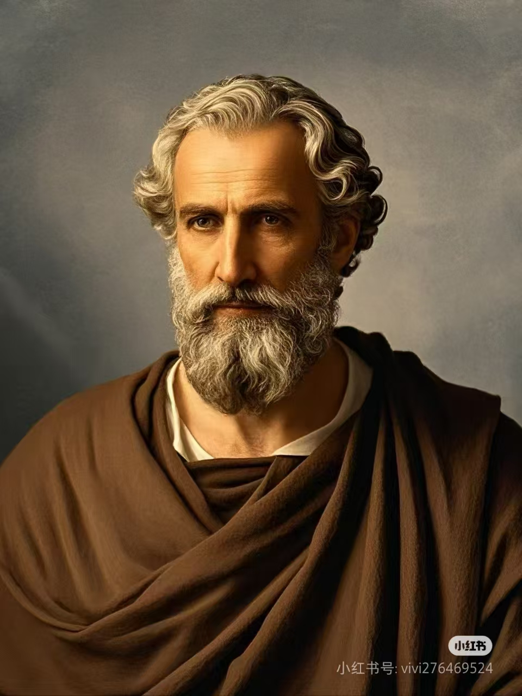
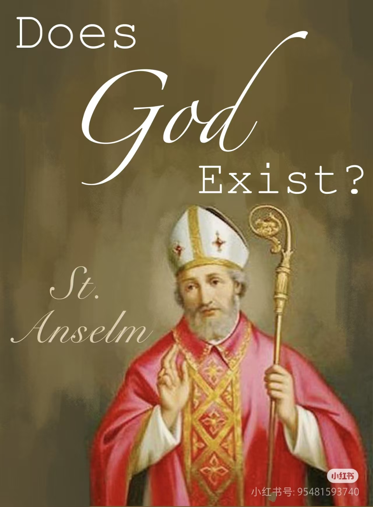
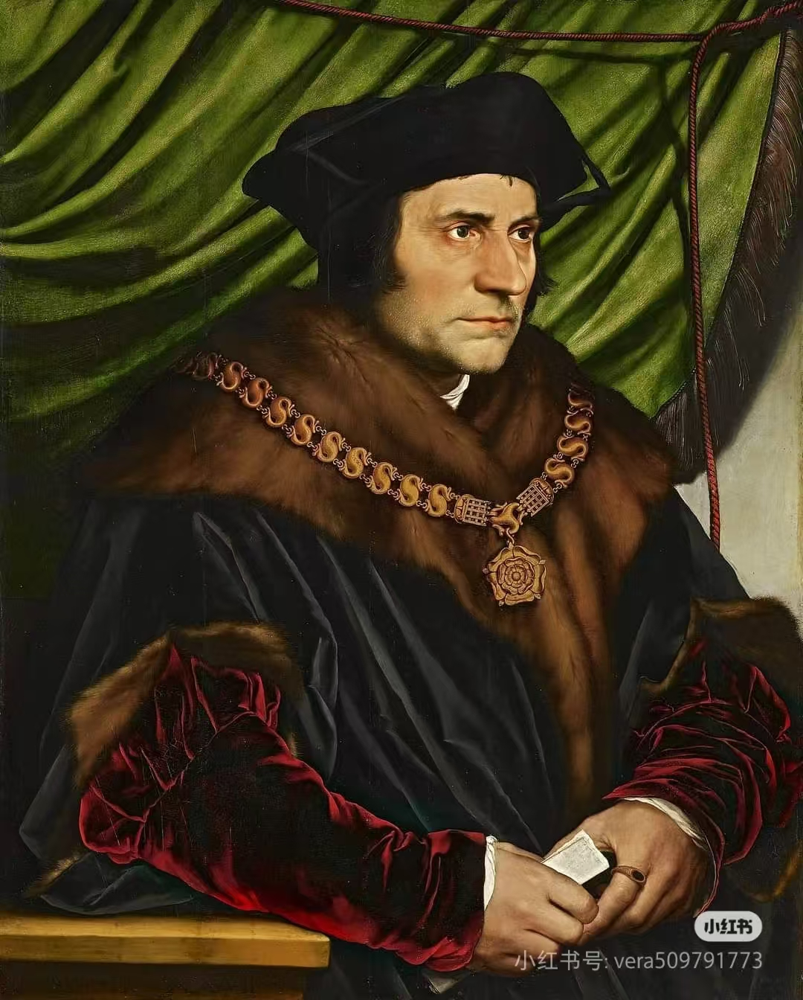
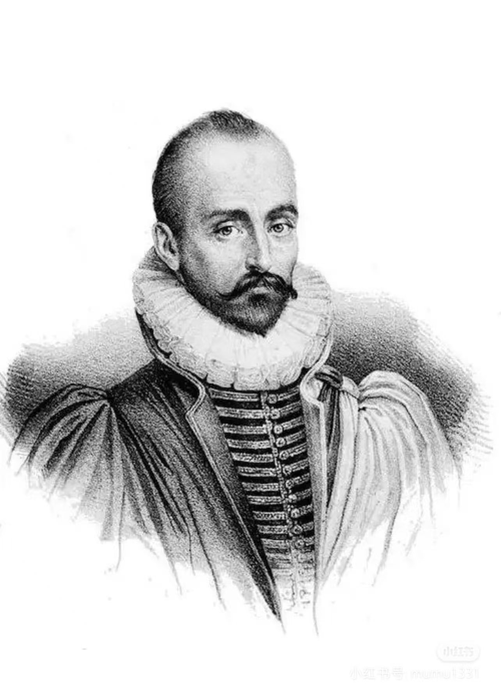
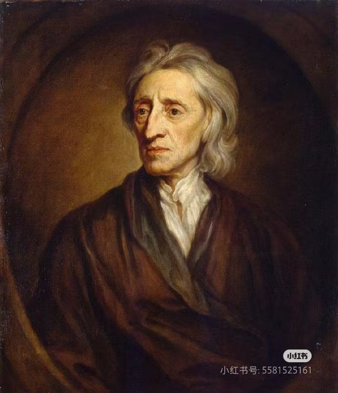
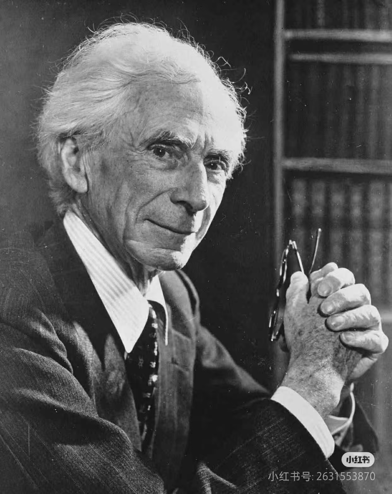
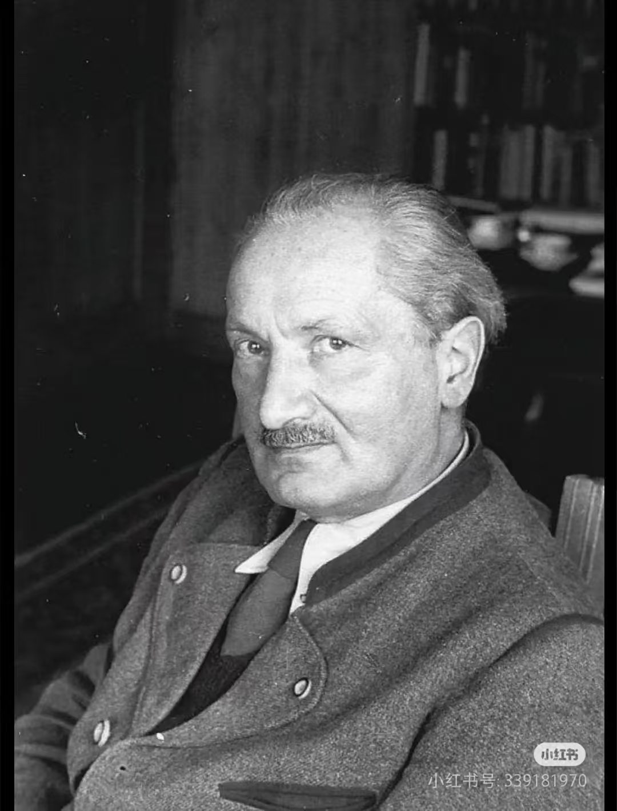

苏格拉底
古希腊（约公元前470-前399）
西方哲学奠基者，主张“认识你自己”，通过问答法追求真理与美德。

古希腊（约公元前470-前399）
西方哲学奠基者，主张“认识你自己”，通过问答法追求真理与美德。
古希腊（约公元前427-前347）
创立理念论，认为理念是真实的世界；著有《理想国》，探讨正义与哲学王。
古希腊（公元前384-前322）
百科全书式哲学家，创立逻辑学与形而上学，提出“四因说”与中庸伦理学。
希腊化时期（公元前341-前270）
快乐主义创始人，主张通过消除恐惧（尤其对神与死亡的恐惧）获得内心宁静。
古罗马（公元121-180）
罗马皇帝，斯多葛学派代表，著有《沉思录》，强调理性、责任与顺应自然。
教父哲学（公元354-430）
融合柏拉图主义与基督教，著有《忏悔录》与《上帝之城》，深刻探讨原罪、恩典与时间。
经院哲学（约1225-1274）
整合亚里士多德哲学与基督教神学，提出“五路证明”，构建庞大的神学哲学体系。

经院哲学（1033-1109）
提出“上帝存在的本体论证明”，名言“信仰寻求理解”。
伊斯兰黄金时代（980-1037）
波斯哲学家与医学家，其哲学综合了新柏拉图主义和亚里士多德主义，影响深远。
中世纪晚期（约1287-1347）
提出“奥卡姆剃刀”原则（如无必要，勿增实体），挑战经院哲学，为近代科学思维铺路。
文艺复兴北方人文主义（1466-1536）
代表作《愚人颂》，批判教会腐败与社会愚昧，倡导人文主义与和平的宗教改革。
文艺复兴（1469-1527）
现代政治学之父，著有《君主论》，主张政治应脱离道德束缚，现实主义先驱。

文艺复兴（1478-1535）
著有《乌托邦》，描绘了一个财产公有、理性治理的理想社会，影响空想社会主义。
文艺复兴晚期（1548-1600）
主张宇宙无限与多中心论，泛神论者，因捍卫日心说等思想被宗教裁判所焚烧。

文艺复兴（1533-1592）
散文集创始人，以《随笔集》闻名，强调怀疑主义、自我审视与宽容。
理性主义（1596-1650）
“近代哲学之父”，提出“我思故我在”，创立理性主义与 Cartesian 坐标系。
理性主义（1632-1677）
提出“神即自然”的泛神论，用几何学方法构建伦理学体系，追求理性自由。

经验主义（1632-1704）
经验论奠基人，提出“白板说”，主张知识源于经验；自由主义政治哲学先驱。
经验主义（1711-1776）
彻底的经验主义者与怀疑论者，挑战因果关系与自我观念的客观性，影响康德。
德国古典哲学（1724-1804）
发动“哥白尼式革命”，调和理性与经验，著有《纯粹理性批判》，奠定批判哲学。
马克思主义（1818-1883）
创立历史唯物主义与剩余价值理论，强调实践与阶级斗争，著作《资本论》。
存在主义先驱（1844-1900）
宣告“上帝已死”，批判传统道德，提出“权力意志”与“超人哲学”。

分析哲学（1872-1970）
分析哲学奠基人之一，关注语言与逻辑，著有《西方哲学史》，社会活动家。

现象学与存在主义（1889-1976）
探讨“存在”问题，分析“此在”的生存结构，著有《存在与时间》。